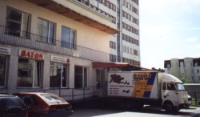

INFORMACJE O FIRMIE
Piekarnia "BATON" jest jednym z najwiekszych pod wzgledem wielkosci produkcji i zatrudnienia prywatnym zakladem piekarniczym w Bydgoszczy. Zalozycielem i jedynym wlascicielem firmy jest Andrzej Wasilewski, ktory posiada najwyzsze kwalifikacje branzowe - mistrz cukierniczy i mistrz piekarniczy.
Produkujemy 60 rodzajow pieczywa i galanterii piekarniczej, a specjalizujemy sie w produkcji chlebow o przedluzonej trwalosci. Kazdy produkt o przedluzonej trwalosci jest oznaczony wlasnym kodem kreskowym.
NASI KLIENCI
Zaopatrujemy rynek lokalny i regionalny, swym zasiegiem obejmujac Bydgoszcz, Torun, Inowroclaw i inne mniejsze miejscowosci. Wiekszosc placowek handlowych dzialajacych na rynku bydgoskim ma w swoim asortymencie wyroby pochodzace z piekarni "Baton".

Badania rynku pieczywa wykazuja, ze popularnosc naszych produktow wsrod konsumentow pieczywa jest bardzo duza. Wyroby pochodzace z piekarni "Baton" oceniane sa bardzo wysoko o czym swiadczy wielkosc codziennej produkcji i znikomy procent zwrotow. Nasi klienci dziela sie na takich, ktorzy kupuja tylko najtansze produkty oraz na smakoszy, dla ktorych walory produktu sa wazniejsze od jego ceny.
Dlatego tez piekarnia nasza koncentruje swoje wysilki na stworzeniu sieci w³asnych stoisk w sklepach, w ktorych jest to mozliwe z oznaczeniem zawierajacym minimum logo firmy.
W przypadku wprowadzania na rynek nowego asortymentu przygotowujemy informacje o produkcie w formie ulotki dostepnej na stoisku sklepowym lub przeprowadzamy promocje, polaczona z degustacja wypiekow bezposrednio w punktach sprzedazy.
"Z MYSLA O PRZYSZLOSCI"
Lata dzia³alnosci daly nam stabilna pozycje i znaczny udzial na rynku piekarniczym. Mimo to nieustannie inwestujemy "z mysla o przyszlosci" co wyraza sie poprzez: poszerzanie oferty asortymentowej, proby zwiekszenia dostepnosci towarow na rynku. Wyposazylismy nasza piekarnie w najnowoczesniejsze urzadzenia unozliwiajace produkcje szerokiego asortymentu piekarniczego. Wdrozylismy takze system kontroli jakosci w trosce o zaspokojenie i usatysfakcjonowanie klientow. Dla potrzeb naszej produkcji uzywamy naturalnych komponentow wysokogatunkowej maki, wyselekcjonowanych ziaren slonecznika, sezamu, maku, lnu, zyta i pszenicy.
Inwestujemy w nowinki techniczne i technologiczne, stale podnosimy kwalifikacje swojej zalogi poprzez udzial w targach, wystawach, sympozjach naukowych poswieconych tematyce branzowej i wspolprace z firmami zagranicznymi. Stosowane przez nas technologie nie odbiegaja od aktualnych trendow swiatowych.
Z uwagi na zasilanie naszych piecow przez energie elektryczna i gaz prowadzimy produkcje nieuciazliwa ekologicznie.
Stale rosn¹cy popyt jest dowodem jakosci i konkurencyjnosci na bydgoskim rynku co oznacza, ze proponowany towar zdobyl uznanie konsumentow.
Najnowszym, realizowanym przez nas od 1998 roku pomyslem jest tworzenie firmowych stoisk wypieku i sprzedazy pieczywa bezposrednio w sklepach. Tego typu inwestycje polegaja na utworzeniu w sklepie stoiska piekarniczego, w którym na miejscu dokonujemy wypieku pieczywa. Umiejetne wyeksponowanie pieca piekarniczego i elementow linii produkcyjnej pozwola klientom sklepu na obserwacjê na zywo procesu przygotowania i wypieku pieczywa, uatrakcyjniajac dokonywanie zakupow.
PIEKARNIA "BATON" JAKO ZAKLAD PRACY CHRONIONEJ
Jestesmy zakladem pracy chronionej i wsrod nas pracuje ponad dwadziescia osob niepelnosprawnych w pelni zintegrowanych z pozosta³a czescia zalogi. Nasi niepelnosprawni pracownicy czynnie uczestnicza w rehabilitacji zawodowej i spolecznej w gronie wyprobowanych przyjaciol.
Dodatkowa korzysc dla naszych kontrahentow plynaca z naszego statusu prawnego to fakt, ze dokonywanie u nas zakupow daje podstawe do odliczenia sporych kwot od obowiazkowych dla duzych przedsiebiorstw wplat na rzecz PFRON.
Zywimy nadzieje, ze nasze wyroby zaspokoja oczekiwania nawet najbardziej wymagajacych klientow. Zalezy nam na obecnosci w Panstwa domach. Zyczymy wszystkim smacznego.
WYROZNIENIA
W grudniu 1993 roku w konkursie organizowanym przez NOT i Expres Wieczorny w Bydgoszczy obejmujacym swoim zasiegiem kilka wojewodztw przedsiebiorstwo otrzymalo wyroznienie, za jakosc i walory smakowe chleba tostowego, w postaci Statuetki Hermesa i dyplomu honorowego.
W 1996 podczas Miedzynarodowych Targow Polagra otrzymalismy za jakosc swoich wyrobow oficjalne wyroznienie.
W 1997 na Miedzynarodowych Targach Interpiek zdobylismy III miejsce w konkursie "Smak polskiego chleba".